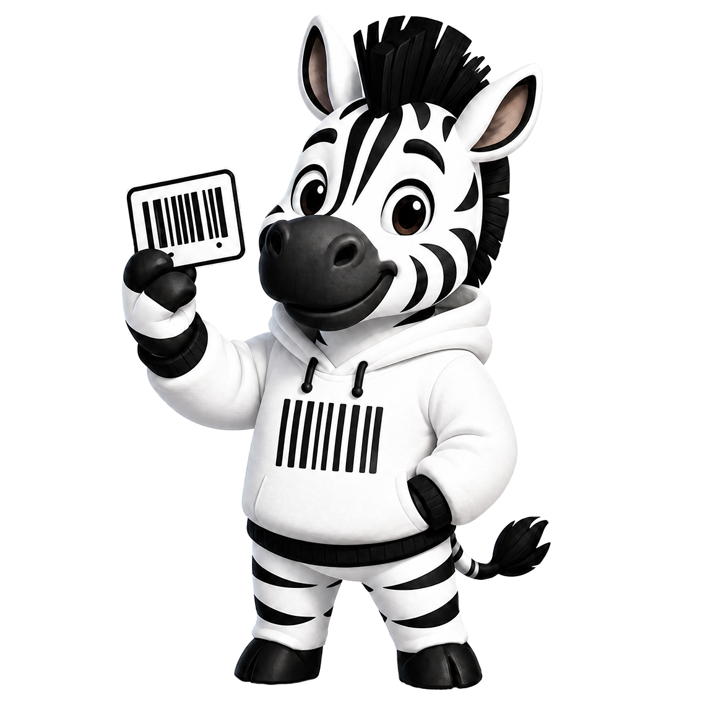

By using Kodnyk you agree to these terms. If you do not agree, do not use the app.
A personal wallet for loyalty/discount cards: you add cards, and the app renders their barcodes for scanning at checkout. The app is free and provided for personal, non-commercial use.
Everything you add (card numbers, names, notes, photos) is yours and stays your responsibility. Do not add content that is illegal, that you have no right to store, or that is sensitive (payment cards, documents, passwords). Cover photos never leave your device.
Do not abuse the service: no attempts to break, overload, or reverse-engineer it, no unauthorized access to other people's data, no unlawful use of cards or barcodes.
The app is provided "as is", without warranties of any kind. We do not guarantee that a shop will accept a rendered barcode, that data will never be lost, or that the service will be uninterrupted.
To the maximum extent permitted by law, we are not liable for any damages arising from the use of (or inability to use) the app, including lost data, lost discounts, or any indirect damages.
You can stop using the app and delete your account (with all data) at any time in Settings. We may suspend accounts that violate these terms.
We may update these terms; the current version is always available at this page and inside the app. Continued use means acceptance.
Користуючись Kodnyk, ви погоджуєтеся з цими умовами. Якщо не згодні — не використовуйте застосунок.
Особистий гаманець для дисконтних карток: ви додаєте картки, а застосунок відображає їх штрихкоди для сканування на касі. Застосунок безкоштовний і призначений для особистого некомерційного використання.
Усе, що ви додаєте (номери карток, назви, нотатки, фото), належить вам і залишається вашою відповідальністю. Не додавайте контент, що є незаконним, який ви не маєте права зберігати, або чутливі дані (платіжні картки, документи, паролі). Фото-обкладинки не залишають ваш пристрій.
Не зловживайте сервісом: жодних спроб зламати, перевантажити чи реверс-інжинірити його, жодного несанкціонованого доступу до чужих даних, жодного незаконного використання карток чи штрихкодів.
Застосунок надається «як є», без будь-яких гарантій. Ми не гарантуємо, що магазин прийме відображений штрихкод, що дані ніколи не буде втрачено, або що сервіс працюватиме без перерв.
У межах, дозволених законом, ми не несемо відповідальності за будь-які збитки від використання (чи неможливості використання) застосунку, включно з втратою даних, знижок або будь-якими непрямими збитками.
Ви можете будь-коли припинити користування та видалити акаунт (з усіма даними) у Налаштуваннях. Ми можемо призупиняти акаунти, що порушують ці умови.
Ми можемо оновлювати ці умови; актуальна версія завжди на цій сторінці та в застосунку. Продовження використання означає згоду.